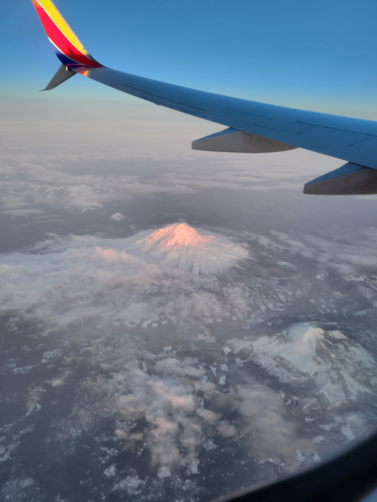
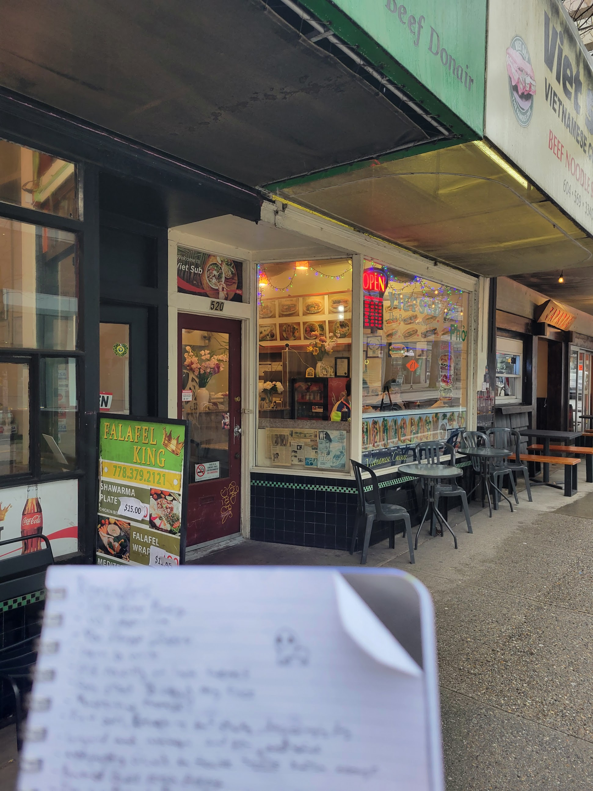

Personal Journal: Vancouver Solo
My first trip to Canada, a short review and the current climate

Shasta from the flight
The transit up and down between Vancouver and California was the closest I've been to solo traveling. I hopped on a flight from my (can I say cozy) hometown airport, SMF, and landed in Seatle. It was only a short trek to the Greyhound station which was then a mere 4 hour drive in bus that smelled of cleaning chemicals. The bus driver was great though and I had the opportunity to practice my french with another solo traveller from Le Havre. When we reached the border it didn't seem like the Canadian Border Patrol was very happy to see us, but given the current climate I don't blame them. We were rushed through the station despite there being nobody else beside our bus residents.
Personal Writings

A picture I took while walking downtown.
My experinece with Vancouver is molded by the priveleges of being housed in the very heart of downtown and having two, working legs. Tomororow I'll travel down Main at night so my oppinion may change.
Vancouver makes the top of the "me-friendly" list. Unlike Edinburg, San Francisco or even hometown Sac, this city feels accessible, walkable, almalgamed. It is as if everywhere is the same, predictable. Did you ever buy those sand mining toys? They contained a block of hardened "sand" with small plastic treasures disperesed throughout, and you'd mine your way through with a little pickaxe. It was safe, low effort, intuitive and gave y ou just enough delayed gratification to be rewarding. That's what this city is like. Starting from its center of mass and spreading outward like a tourista tumor, I happened accross grab & go holes in the wall, cultrual stationary shoppes, and high end thrift stores around every other street. And while some of them have laughably Millenial names like "The Spot & Co. Breweres Ltd.", many of the locations are both functionally quaint and put together with professional care. (Check out fat MAO's Thai).
I felt comfortable in an abmience that eminates balance. Restaruatns trust that thier patrons won't spill on their seat cusions, the police walk about without a suspicious aura, and the public can be trusted not to short outdoor outlets. At the same time, poele walk the sidewalk with politely-quiet cautiousness. As for litter, the streets have some but it's not overwhelming. There are a few homelss camps but nothing compared to SF or Sac. On occasion you will see someone curled up, taken by fentanyl, on the rainy street. I guess my bar for comfort is low.
Vancouver has many genuine perks for tourists though. The city blocks are small enough to be walkable yet takeing a stroll won't make you feel cramped or limmited. And against the rushed nonchalantness of hotel receptionists, border guards, restauranteers, etc. the placees feel curated and intentinal. This atmosphere is amplified by a want of cheesy souvenir corner stores.
Something about Vancouver is contained to reiterate. It's an international city. There are Indian, Persian, Chinese, and American influences under every rock around every corner. But walking around convinces me that there isn't a world beyond the downtown limits--I'm not sure what causes this: the homely ground level topped with sky blotting skyscrapers? The social understanding people seem to innately have? The personal novelty of the sigts? Whatever the case, I'm enamored and I dont feel like a foreigner.